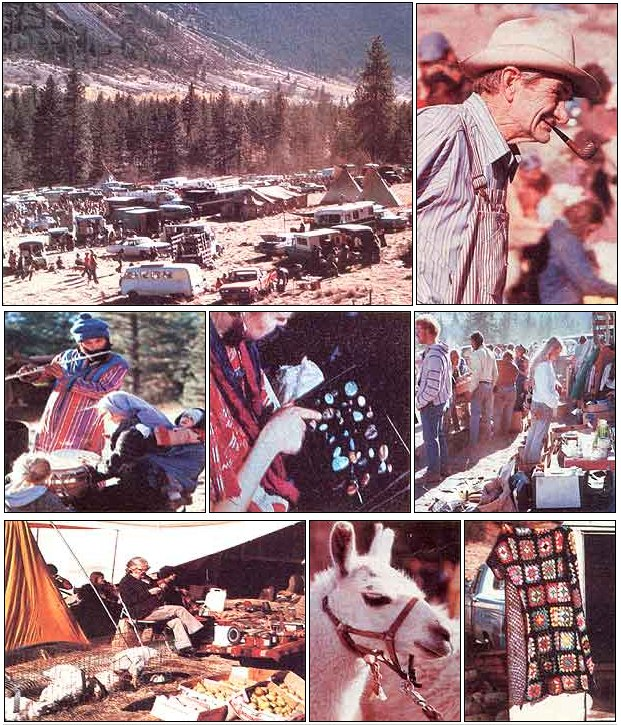
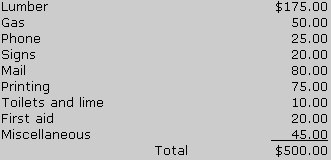

Mary Preus Hamilton tells us about a festival that frowns on money!
"The Third Annual Northeast Washington Barter Fair," the leaflet noted, "will provide a way for us to sell or trade the products we've grown or made . . . without having to resort to the conventional market system, in which producers are too often cheated."
This unusual event (the news sheet went on to say) first took place back in 1974, when someone offered an unused field as a "fairground" and less than 100 people showed up to swap. The next year, the barter festival drew 300 traders, and-by the time my husband George and I read the handout describing the 1976 affair-at least 500 people were expected to attend!
It sounded great to us, so-though we were still "city people"-we blended gallons of old-fashioned potpourri, packed up some fancy sachets and spice necklaces I'd made, and set off for our first two-day swapping meet . . . which took place just outside Tonasket in northeastern Washington. (The fair's location is changed from one year to the next, to insure that the same people don't always have to drive a long distance to the event.)
AN ALTERNATIVE TO AGRIBIZ
Even without the prominently displayed "Barter Fair" sign, no one could have failed to recognize the festival site. Bouncing down the dirt road in front of us was a pickup truck piled high with potatoes, tomatoes, and melons. Ahead of that vehicle was a VW bug bulging at the seams with pumpkins and squash. And in the distance-stretched across a privately owned, flat, 10-acre field-was a kaleidoscope of cars, trucks, tents, tipis, and (most of all) people . . . not the 500 that had been anticipated, but at least 2,000!
There were, we soon learned, no entrance formalities or fees. The field was partitioned with signs and colored flags to indicate parking areas for both daytime and overnight visitors . . . and the only reference to money was a donation box which was labeled, "If this fair has helped you, please help us cover costs . . . thank you."
Coming closer, we looked down upon an array of stalls, vehicles, and people that had all the color and life of a Middle Eastern bazaar. Soon we were in the thick of it! Some folks had set up tables or elaborate stalls, while others displayed their goods on cloths spread on the ground. Trucks, vans, station wagons, and all sorts of unconventional homeson-wheels were parked on either side of the row, loaded with everything from sweet corn to split cordwood . . . from used books to goats . . . and from soup to nuts.
We passed a group of people pressing fresh apple cider with an old-fashioned handcrank press . . . a woman giving haircuts . . . a couple popping corn over a kerosene stove . . . another pair giving double massages to blissful customers . . . a man making tools at his portable smithy . . . a performing bluegrass band . . . a dairy commune offering creamy yogurt from 50-gallon tubs or hefty chunks of homemade cheese on buns . . . and a man wearing a sign that read, "Free Hugs".
The variety and quality of farm produce was equally fantastic . . . including fresh-picked organic Born, tomatoes, peppers, melons, pears, plums, beets, potatoes, beans, broccoli, mushrooms, Washington apples, a dozen varieties of squash, and much more! Local food co-ops were there, too . . . trading oil, milled grains, spices, granola, and other staples. It was a real celebration of nature's bounty . . . a time to renew old friendships and make new ones . . . a final gathering before settling in for the winter.
MORE TO IT THAN BARTER
"Well, what am I waitin' for?" I thought, and draped a bright cloth over our card table to display my wares on. The first customer arrived almost instantly . . . a nine-year-old boy who offered a half-wilted bouquet of wildflowers for a spice necklace. (It didn't take long for me to find out that there was much more to the barter business than straight hard-nosed trading!)
As the day went by, I watched as people talked, made offers, and tried to assign a fair value to their goods. I saw 1,001 variations-mostly lightheartedon the age-old art of barter: making an acquaintance, shooting the breeze, matching wits, and striking a bargain. Here are some sample conversations:
"What do you want for that parrot?" asked one old fellow.
"What've you got?" was the answer.
"Only my mother-in-law and a cold." "Okay, I'll take the cold.
I could do with a week off work."
Sometime later, a young man walked around the barter circle, with a twoman crosscut saw swinging from his shoulders.
"Hey, what'll you trade for your saw?" a man with goats called.
"What'll you offer?"
"I'll give you a goat."
"Fine," said the youth. Then, turning to a friend, he added, "What am I doing? I don't even have a place to live!
" I also heard a woman ask the price of dried Indian corn . . . saying she'd pay in cash.
"Don't you have anything to barter?" the corn vendor questioned. She shook her head, and he reluctantly set a price of 100 an ear.
Some people flat refused to take money at all, but-at the other extreme there were a few who accepted only money. Yet despite the small element of commercialism that crept in with the large crowd, the entire affair was dominated by a spirit of mutual understanding and support, old-fashioned good neighborliness, and-yeseven love.
A NEW WAY TO RELATE
In the midst of all the dickering, I didn't find it easy to assign a value to my necklaces and potpourri. I really had to think about my habitual attitudes toward money and "business" and how they relate to dealings with people. Some folks had just cash to offer and I didn't want to refuse them, so-in the end-I used the wholesale price of my products as a guide . . . but only as a guide.
After all, there was no one to say that I couldn't accept a wilted bouquet, a glass of cider, or a little girl's kiss for something that usually brought me $3.50 . . . I could even give the item away if I felt like doing so.
Of course, the fair included a whole lot of goin's on besides barterin'. There was a children's parade and puppet show, the chance to try a cleansing sweat bath in an Indian-style lodge, a community meeting to discuss plans for a regional co-op warehouse, electioneering for political candidates, music-making, chanting, Sufi dancing, and lots of cooking!
That year the barter fair featured communal meals served in shifts. And cooking for 2,000 people is no snap . . . even with four wood-stoves, charcoal pits, an array of huge pots and pans, a few dozen willing workers, and a pack mule that made the rounds of the barter circle and hauled away food items donated to the community kitchen.
When evening rolled around, most traders put their goods away to socialize, make music, dance, or just sit around the campfire and enjoy themselves.
DOZENS OF "SUCCESSFUL SWAPS"
What did people trade for my modest supply of goods? After two days, the "harvest" included an amazing quantity and variety of items: canned goods, seashells, an antique pulley wheel, gemstones, glass gallon jars, an original handwritten story, homemade soap, milk, honey, and Indian corn ... plus enough money to pay for our trip and enough fresh and dried fruits, vegetables, herbs, and grains to see us well into winter. In fact, our old station wagon was so loaded down that we barely made it back over the pass toward home!
It's hard to say just what my best swap was, though. Perhaps it was a trade of one spice necklace for 40 pounds of butternut squash . . . or maybe it was the little girl's kiss that another piece of jewelry "bought" me.
In all honesty, however-as contented as we were with the bounty from our first barter fair the feelings and memories we took home were far more important than any worldly goods. The pleasure that people showed in the things I'd made gave me a deeper satisfaction than money could.
Best of all were the many fine people who shared much more than barter items with us. For one thing, those folks recharged our resolve to break out of our rut and join "them that's doin' "!
A BARTER FAIR IN YOUR AREA?
George and 1 are barter fair veterans now. We've attended the Northeast Washington festival every year since that first experience, and I-for one come home so full of enthusiasm that I'm sure such a people's celebration could be worthwhile in any area.
What would it take to get a swappin' fair going where you live? You'll need to do some careful planning for a start. 1 contacted an experienced festival organizer about the subject, and his main piece of advice was to "do lots of planning way ahead of time . . . and then be flexible when reality intrudes".
He also gave me other helpful tips to pass along.
SOME THINGS TO CONSIDER
First, decide what kind of barter fair you want, since that choice will Influence your other decisions right down the line. The gathering can be citywide, countywide, or even serve folks from several states! It could be a harvest festival (as is the Washington, event) . . . or a spring celebration, where such goods as plant starts and winter-made crafts could be traded.
It's easier, of course, to make a success of a small, local, one-day affair than it is to "pull off" a big gathering that would require facilities for camping out, parking for hundreds of vehicles, and meals.
For any barter fair, however, you'll need a free location . . . such as an open field, a parking lot, or a baseball diamond. The site is of first importance, to be sure, but no more essential than are people who'll be willing to make advance preparations and cover the initial costs. The Northeast Washington gathering's organizers are able to make do on about 25 cents per person for the two-day event. The whole Idea, of course, is that-just as the exchange of money is discouraged in transactions at the fair-the swap meet Itself should be based as much as possible on volunteered land, materials, and labor . . . with only a minimum of cash involved in the preparations.
Here, for example, is one fair's financial breakdown:
As you can see, a good bit of that total is spent on printing and mailing leaflets to publicize the event, because publicity will determine how many people-and what kind of people-will come to your celebration.
"The main reason for our success," the fair's planners pointed out to me, "is the responsible group that attends ... people who're highly conscious of how to live in harmony with the land and with each other."
In other words, vaguely phrased publicity placed in random locations will probably draw a less than ideal crowd, so the Washington festival's leaflets are carefully explicit about the fair's barterin' nature, and they're mailed directly to places where rural alternative communities (local food cooperatives, for example) gather.
Each year, of course, less publicity is necessary, since more people anticipate the event and come prepared to do some "serious" trading.
GOOD PEOPLE, FAST TALK
Another "must", I was told, is "some charismatic individual who's prepared to do a lot of running around and a lot of fast talking . . . someone who's willing to work behind the scenes to get your barter fair underway and to make sure the event flows smoothly once it's started."
Since thousands now come to the Washington fair, some volunteers must be on the grounds about 10 days ahead of time. The first thing they do is build a shed to help keep track of tools. Then the parking areas are laid out, with separate spots for live-in campers, overnight parking, and daytime use. (Only rigs with loads that're too heavy to carry are allowed to drive into the barter area itself.) Driveways are clearly marked so people won't block traffic by parking in them, and plenty of signs are put up to indicate what's where. (Most fairs won't require this much work in advance, of course, but the example may give you some idea of the sorts of preparatory measures you'll need to think about.)
Meals wouldn't be necessary for a one-day festival, but you might want to try to organize a potluck lunch. If sowhile you won't need cookstoves, fire. pit grates, and split wood-someone will have to be on hand to get the distribution area set up, before food and offers of assistance start to roll in.
A bulletin board for announcements and general information is a good idea and helps to unify the gathering. Sanitation is also extremely important: Be sure to provide plenty of good drinking water, adequate toilet facilities, and numerous washing-up areas. First aid is another essential consideration. And-while there may be no real need for child care, since the youngsters usually entertain each other pretty well-something like a puppet show can be a lot of fun for everyone.
IN CLOSING
There's no denying that a barter fair involves a lot of work, but a successful celebration is well worth the effort ... worth it for the good swaps, for the new friends, and-most of all-for the satisfaction of knowing that you've had a part in creating an occasion that enlarges and draws together a circle of people who are all working and growing toward better and happier lifestyles.
|
 CLOCKWISE FROM TOP LEFT: At this barter fair, tents and caravans nestle against the mountainside .... An old codger proposes a trade .... Folks mill among laden tables . . . A quilt . . a llama . . . apples . . . good country music ... and gems on display! |
 |
|